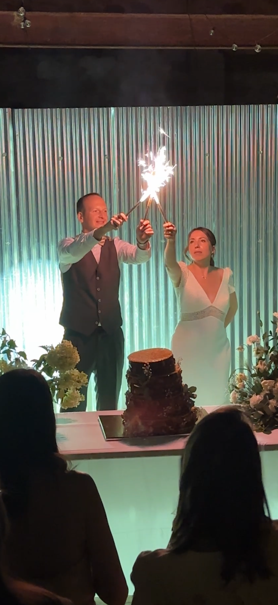
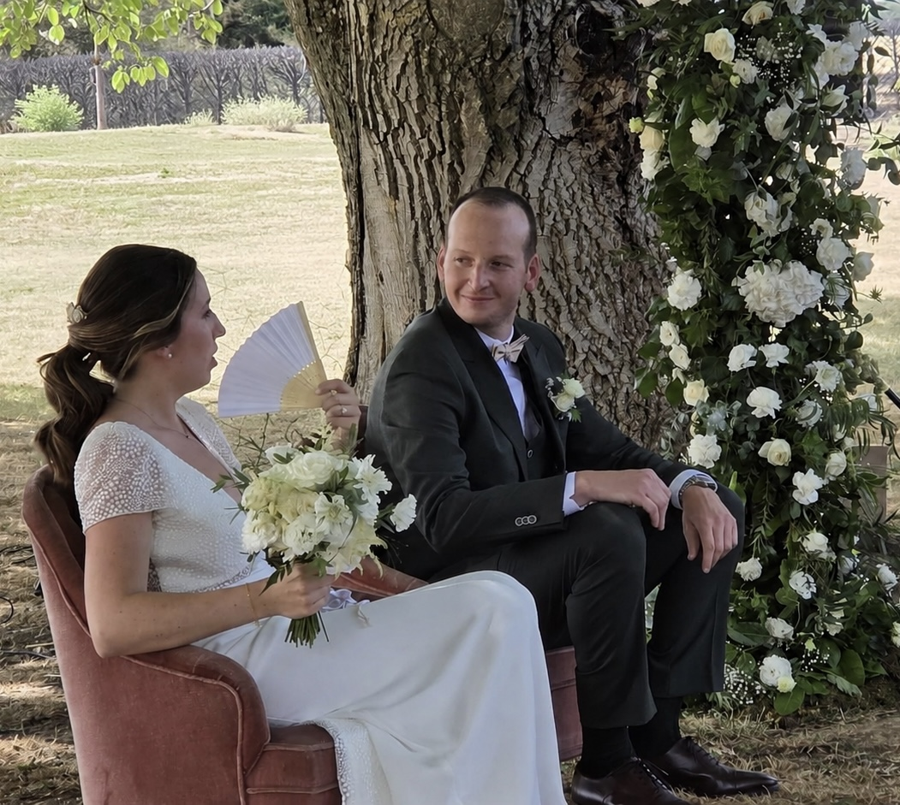
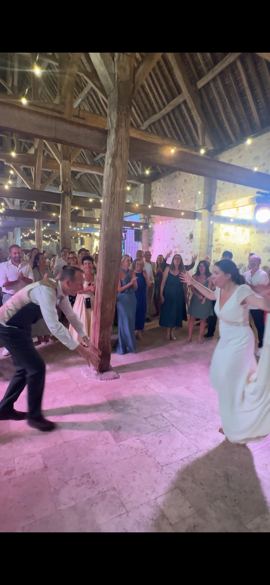

Merci d'avoir fait le déplacement, d'avoir dansé, ri, pleuré de joie et célébré avec nous. Votre présence a rendu cette journée du 11 juillet tout simplement inoubliable.
Chaque sourire, chaque mot, chaque instant partagé restera gravé dans nos cœurs. Nous ne pouvions rêver plus belle façon de commencer notre histoire à deux.
Avec tout notre amour,
Marine & Julien



La pièce montée & la cérémonie laïque
Le jour de la cérémonie laïque, nous avons scellé une capsule temporelle remplie de vos messages. Nous l'ouvrirons ensemble le 11 juillet 2036 pour les relire, dix ans plus tard.
jusqu'au 11 juillet 2036